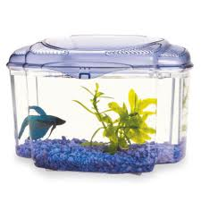
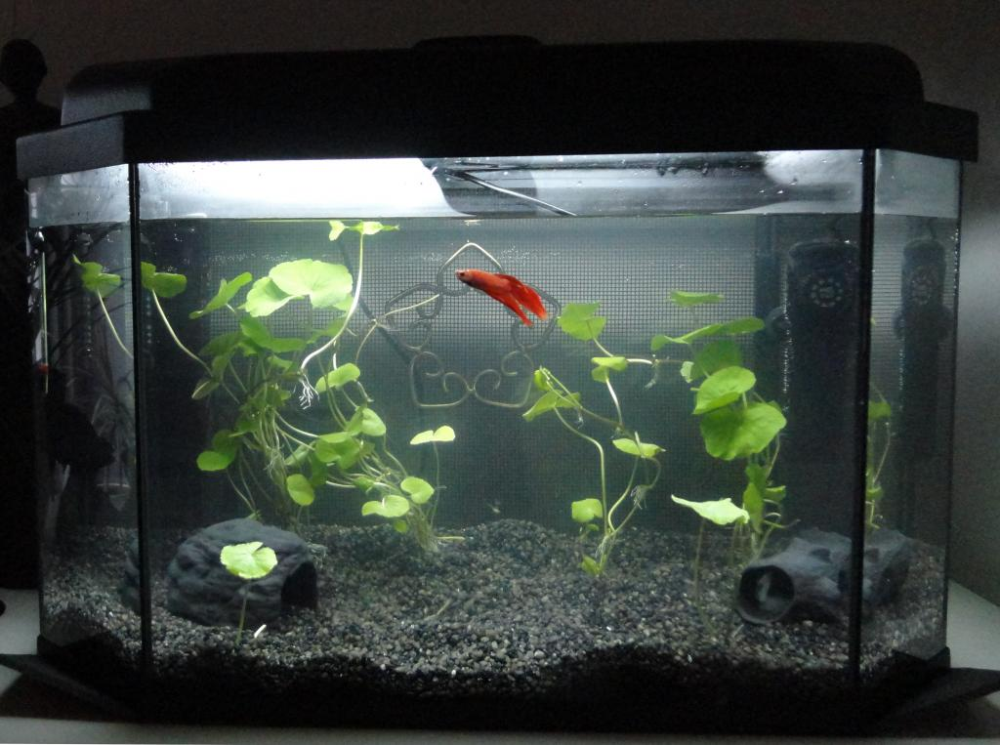
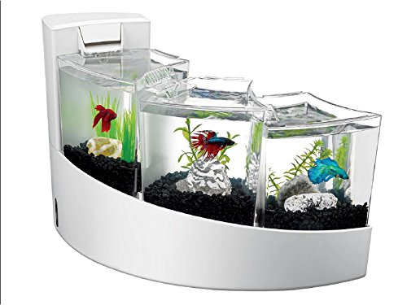
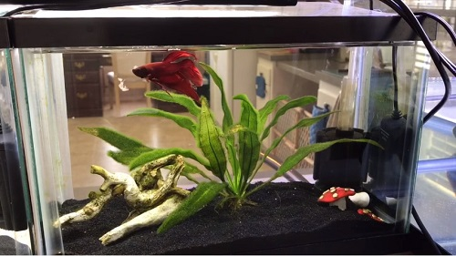
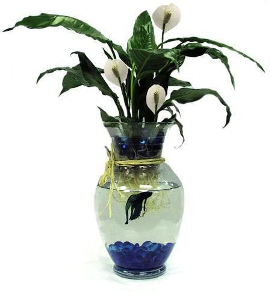

Set up
Before you buy your new fishy friend here are some things to concider when it comes to setting up your fish tank.
Betta Tank Size
First of all you will need a tank. The overall rule of thumb is the bigger the tank the betta (pun intended), this will ensure you have the healthiest and happiest betta fish. 10L is the absolute minimum size tank you can have for your fish. It is also good to have a tank that is longer than it is high, this isn't too important but if we were to think of the betta fish's natural environment of shallow streams, you will see that water depth isn't too important but longer horizontally swim areas would be of benefit.The position the tank where there is no direct sunlight, but still remains open and visible. Bettas like attention and don't like dark corners of the room.
| Good Tanks | Bad Tanks |
|---|---|
 |
 |
|  |  |
|  |  |
Filters
A filter is a must to help keep the water cleaner for longer. However betta fish do not like strong flowing water and currents. So what is recommended is a gentle aquarium filter, or one that has an adjustable flow. The filter will keep the water clean and healthy for the fish.The filter should have a manual that shows you how to set it up. After adding it to the aquarium make sure that it works and hopefully it won't be creating too strong of a current. If you think the filter is too strong and your filter isn't adjustable you could create a baffle from an inexpensive tank divider or make sure there are a few plants in the way to break the current.
Heaters
Having a heater in your tank is absolutely neccessary when owning a Betta fish. Due to them originating from tropical climates they need their water to be between 25-28 degrees celsius to be comfortable. When purchasing a heater for your aquarium just keep in mind that the heater's wattage and the size of your tank determines which heater you should buy. To monitor your your tanks temperature an aquarium themometer is needed.
Tank Cycling
Without a fishless cycle your betta could experience "new tank syndrome" that could potentially kill your fish. Basically what this cycle does is build up beneficial bacteria in the tank and filter. These beneficial bacteria are used in the tank to break
down harmful fish waste (ammonia) into a less toxic form, first to nitrite and then down to nitrate. Once this cycle is established your tank should stay at a steady Ammonia reading of 0 and Nitrite reading of 0.
To find more
information about Tank Cycling check out this Link that has all the information needed on the topic.
Tank Decor
A major part of caring for a betta fish involves making sure they are content and not stressed. Mimicking their natural habitat is the best way to accomplish that. Bettas love places to hide so they can feel safe, especially when sleeping. Think
of hiding places like their homes.Their natural habitat has lots of places to hide, including substrate, rocks, plants and sticks. Live plants are the best for aquariums because they can help remove ammonia from the water and they're soft. Don't
worry though, artificial plants are fine too, and they are inexpensive and resilient. Their quality has really improved in recent years and look almost identical to the real deal. Be careful with artificial plants and decorations because they
can damage your betta's fins.All artificial plants and leaves should be silk if possible. Logs and other hideaways should also be inspected for sharp edges and sanded down if necessary. Betta owners like to use what is called the "pantyhose
test", running it down the plant or decoration to see if it snags. If it does, the plant or hideout will likely snag a betta's delicate fins too.